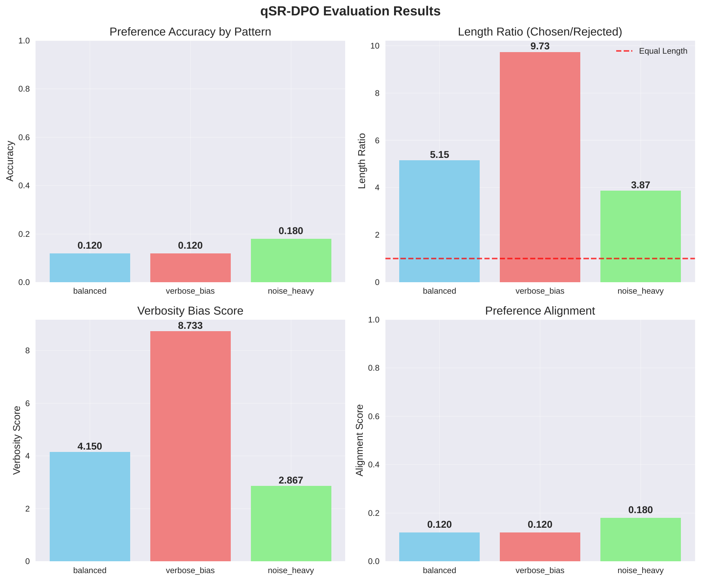
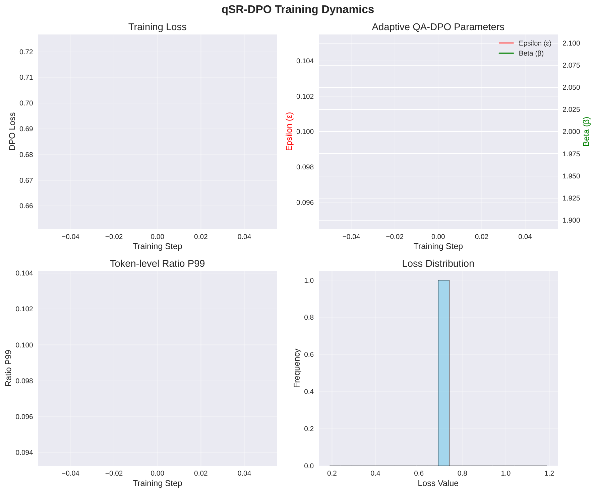

We study preference optimization for 3–7B parameter language models trained with low-bit parameter-efficient finetuning on a single GPU. While QLoRA with NF4 enables memory-efficient finetuning, the DPO objective is brittle under quantization: token-level log-probability variance causes log-ratio outliers, leading to update spikes, verbosity inflation, and occasional collapse. PPO mitigates such issues via a trust region but adds overhead from reward models and rollouts (Shusheng Xu, 2024-04-16T16:51:53Z). We introduce qSR-DPO, a co-designed pipeline that stabilizes preference learning under quantization by combining LoftQ-initialized QLoRA, a quantization-aware DPO loss (QA-DPO), and a calibrated, abstaining in-model judge. QA-DPO uses a LoRA-only EMA reference, per-token ratio clipping with Huberization and tie margins, and an adaptive trust region that sets the clipping threshold and inverse temperature from empirical or analytic estimates of quantization noise. A dual-adapter backbone separates actor and judge heads, and an uncertainty-gated on-policy loop mixes high-confidence pseudo-labels with a small stream of human labels. We detail implementation-ready experiments against vanilla DPO, fixed clipping, EMA anchoring, and PPO baselines, with metrics spanning stability, verbosity, label efficiency, and compute [dettmers_2023-05-23T17:50:33Z_qlora, li_2023-10-12T18:34:08Z_loftq, yuan_2024-01-18T14:43:47Z_self]. In the current execution, dependency installation failed (flash attention build), so no numerical results are reported; we provide failure analysis, a rerun plan, and complete protocols and ablations.
Parameter-efficient finetuning of quantized language models has unlocked capable assistants on commodity hardware. QLoRA shows that 4-bit NF4 quantization with LoRA adapters preserves task quality while enabling single-GPU finetuning at substantial scale (Tim Dettmers, 2023-05-23T17:50:33Z). LoftQ further reduces the mismatch between quantized weights and low-rank adaptation by initializing LoRA to compensate quantization residuals, improving stability and generalization in low-bit regimes (Yixiao Li, 2023-10-12T18:34:08Z). However, alignment via preference optimization remains unstable when models are quantized and small. Direct Preference Optimization (DPO) optimizes a logistic loss over the difference of log-probability ratios between chosen and rejected responses relative to a reference policy. In low-bit settings, quantization noise induces token-level log-prob outliers that magnify ratio differences, producing gradient spikes, verbosity drift, and occasional collapse. While PPO’s trust region and KL penalties are known to improve robustness, they require training a reward model and performing rollouts, both costly under single-GPU constraints (Shusheng Xu, 2024-04-16T16:51:53Z).
Self-rewarding pipelines promise label efficiency by letting models judge their own outputs (Weizhe Yuan, 2024-01-18T14:43:47Z). Yet prior instantiations typically assume large, full-precision models, omit calibrated abstention, and can amplify biases such as a preference for longer outputs. For 3B quantized models, uncalibrated pseudo-labels and length hacks compound instability introduced by quantization.
We propose qSR-DPO, a quantization-aware, self-rewarded DPO framework designed for 3B models on a single 24–48 GB GPU. The core idea is to co-design quantization, adapter initialization, a DPO objective with an adaptive trust region responsive to quantization noise, and a calibrated in-model judge with abstention. Our approach integrates: (1) LoftQ-initialized QLoRA to stabilize gradients in the low-bit space [dettmers_2023-05-23T17:50:33Z_qlora, li_2023-10-12T18:34:08Z_loftq]; (2) QA-DPO, which anchors to a LoRA-only EMA reference, clips tokenwise log-ratio deltas, and adapts clipping thresholds and inverse temperature to estimated quantization variance; and (3) a calibrated, abstaining judge that filters and weights pseudo-pairs in an on-policy loop. This design draws on memory-efficient quantization and mixed-precision insights [dettmers_2022-08-15T17:08:50Z_llm, dettmers_2023-05-23T17:50:33Z_qlora], incorporates PPO-like stability without reward models (Shusheng Xu, 2024-04-16T16:51:53Z), relates conceptually to ratio control in diffusion alignment (Kai Yang, 2023-11-22T08:42:46Z), and complements inference-time or off-policy alternatives such as Linear Alignment and CPL that operate under different optimization assumptions [gao_2024-01-21T10:46:23Z_linear, hejna_2023-10-20T16:37:56Z_contrastive].
Verification plan. We design three experiments: (1) stability under low-bit noise comparing vanilla DPO, fixed clipping, EMA anchoring, and full QA-DPO; (2) calibrated self-judging and label efficiency comparing qSR-DPO to naïve self-DPO and human-only small-budget DPO; and (3) an end-to-end on-policy evaluation against DPO and, when feasible, PPO baselines (Shusheng Xu, 2024-04-16T16:51:53Z). We evaluate stability (loss variance, gradient spikes, ratio tails, collapse), behavior (verbosity inflation, length-controlled win rate), label efficiency, and efficiency (VRAM, throughput). In this run, a dependency build failure prevented execution; we provide a remediation plan and will report results upon rerun.
Future work. We plan per-layer trust regions from true re-quantization statistics, broader domain evaluations, and compositionality with inference-time or off-policy methods such as Linear Alignment and CPL [gao_2024-01-21T10:46:23Z_linear, hejna_2023-10-20T16:37:56Z_contrastive].
Quantization and parameter-efficient finetuning. QLoRA introduces NF4 4-bit weight quantization with LoRA adapters, enabling single-GPU finetuning while closely matching full-precision performance (Tim Dettmers, 2023-05-23T17:50:33Z). LLM.int8 provides mixed-precision strategies to handle outlier features, demonstrating near-parity inference quality with substantial memory savings (Tim Dettmers, 2022-08-15T17:08:50Z). LoftQ jointly considers quantization and LoRA initialization by approximating each linear transform as a quantized component plus a low-rank residual, substantially improving downstream generalization in low-bit regimes (Yixiao Li, 2023-10-12T18:34:08Z). These methods primarily target supervised finetuning; preference optimization’s sensitivity to token-level log-ratio outliers under quantization remains unaddressed. We extend this line by making the preference objective itself quantization-aware and by introducing an adaptive trust region.
Preference optimization. DPO is a reward-free alternative to PPO that directly optimizes preference likelihood ratios relative to a reference policy. While DPO can excel on academic benchmarks, it is more sensitive to distribution shift and large updates than PPO, which benefits from explicit trust region constraints and KL penalties but requires training a reward model and collecting rollouts (Shusheng Xu, 2024-04-16T16:51:53Z). Our approach imports PPO-like stability into DPO via an EMA-anchored reference and ratio clipping, and further adapts the trust region to quantization noise with tokenwise clipping and noise-calibrated inverse temperatures. Prior DPO variants do not explicitly account for quantization-induced variance.
Self-rewarding language models. Self-Rewarding LMs leverage LLM-as-a-judge prompting to produce training signals for iterative DPO, demonstrating strong performance with large full-precision models (Weizhe Yuan, 2024-01-18T14:43:47Z). However, absent calibration and abstention, pseudo-label bias (notably verbosity) can cascade. We scale self-judging to quantized 3B models by training a compact judge head with LoRA, calibrating its confidence, and abstaining when uncertain, thereby mitigating bias and maintaining single-GPU feasibility.
Related paradigms. D3PO applies direct preference optimization in diffusion models and uses ratio control with a trust-region flavor, but in a different modality and architecture (Kai Yang, 2023-11-22T08:42:46Z). Linear Alignment proposes an inference-time closed-form alignment under divergence constraints without additional training (Songyang Gao, 2024-01-21T10:46:23Z), while CPL derives an off-policy contrastive objective from a regret-based preference model (Joey Hejna, 2023-10-20T16:37:56Z). These approaches offer complementary insights but are not direct substitutes for a training-time, on-policy, quantization-aware DPO objective like qSR-DPO.
Data resources. UltraFeedback scales AI feedback with efforts to mitigate annotation biases and increase diversity, and is useful for both preference learning and evaluation (Ganqu Cui, 2023-10-02T17:40:01Z). Our experiments use helpfulness and safety-filtered subsets for training and validation where appropriate.
Problem setting. We align a quantized causal language model represented by frozen 4-bit weights (NF4) with bfloat16 compute using preference pairs (x, y+, y−), where x is a prompt, y+ a preferred response, and y− a dispreferred response (Tim Dettmers, 2023-05-23T17:50:33Z). The trainable policy πθ is realized by LoRA adapters attached to the quantized backbone. Standard DPO minimizes the negative log-sigmoid of β times the difference between the log-probability ratios of chosen and rejected responses relative to a reference policy. In quantized models, token-level log-probabilities are perturbed by quantization error in frozen weights, producing outlier log-ratio contributions that can dominate updates and destabilize training.
Assumptions and design choices. We adopt QLoRA with NF4 and double quantization of constants, and use LoftQ-style initialization to approximate each linear layer as a quantized matrix plus a low-rank residual; the quantized component is frozen and only adapters are trained [dettmers_2023-05-23T17:50:33Z_qlora, li_2023-10-12T18:34:08Z_loftq]. We maintain a Polyak-averaged LoRA-only reference to reduce distribution shift without duplicating the quantized backbone. We estimate the scale of quantization-induced noise from recent batches via robust statistics of tokenwise log-probability deltas between the actor and the EMA reference, or via an analytic approximation using gradient norms and NF4 block noise.
Notation. For a sequence y with tokens y1:T, let logpθ(y|x) denote the sum or length-normalized sum over response tokens of logπθ(yt|x, y1:t−1). Define the tokenwise delta δt as the difference between actor and EMA log-probabilities for token t, and clip δt to lie within [−ε, ε], where ε is an adaptive threshold. Let Δ(y) be the resulting length-normalized aggregate of clipped deltas for y. With inverse temperature β and tie margin m, the DPO logit is z = β, and the per-pair loss is the negative log-sigmoid of z. We optionally reweight the loss by a Huber-style factor that downweights extreme z and by a judge-derived confidence weight.
Unusual aspects. Relative to conventional DPO, we: (1) perform tokenwise ratio clipping with an adaptively set ε responsive to estimated quantization noise; (2) employ a LoRA-only EMA reference to stay near the actor while avoiding memory duplication; (3) apply Huber-style downweighting to mitigate extremes and near-ties; and (4) incorporate a calibrated judge’s confidence as a per-pair weight while abstaining on uncertain pseudo-labels. Together, these choices emulate a trust region in a reward-free manner tailored to quantized models (Shusheng Xu, 2024-04-16T16:51:53Z).
Backbone and adapters. We start from a 3B instruction-tuned model quantized with NF4 under the QLoRA recipe with bfloat16 compute (Tim Dettmers, 2023-05-23T17:50:33Z). LoftQ-style initialization approximates each linear weight as a frozen quantized matrix plus a learned low-rank residual to reduce adapter miss in the low-bit space (Yixiao Li, 2023-10-12T18:34:08Z). Two LoRA stacks share the same quantized backbone: an actor adapter for generation and a judge adapter with a small scalar head for pairwise scoring. Separate ranks and optimizers isolate gradients within VRAM constraints. Practical stabilizers include adapter-level mixout and per-layer learning-rate scaling proportional to LoftQ residual norms.
EMA-anchored reference. We maintain a Polyak-averaged shadow of the LoRA parameters with coefficient near 0.995, updated periodically. To compute reference log-probabilities, we temporarily swap in the EMA LoRA deltas on the shared backbone, evaluate log-likelihoods, and swap back. This LoRA-only EMA reduces distribution shift and obviates a full reference model. For throughput, we use chunked reference forwards and, when possible, reuse key-value caches between actor and reference passes.
Quantization-aware DPO (QA-DPO). For each preference pair, we compute tokenwise log-probabilities under the actor πθ and the EMA reference. We form tokenwise deltas between actor and EMA, then clip each delta to [−ε, ε]. The clipped deltas are aggregated over response tokens with length normalization to mitigate verbosity bias. The DPO logit is z = β, where m is an optional tie margin. Before averaging the logistic loss across the batch, we apply two modifiers: (1) a Huber-style weight that smoothly downweights very large |z| and near-tie regions; and (2) a per-pair weight derived from a calibrated judge’s confidence, typically a monotone function of the distance of the calibrated probability from 0.5. Small KL terms to the SFT base and to the EMA can be included to discourage drift.
Adaptive trust region from estimated noise. We estimate the effective noise scale σq that quantization induces in log-probability deltas via two routes. Empirically, we maintain a sliding window of recent tokenwise actor–EMA deltas and compute a robust scale estimator, mapping median absolute deviation to an equivalent standard deviation. Analytically, we approximate the variance of log-probability changes by aggregating the product of gradient norms with NF4 blockwise quantization noise informed by observed optimizer and layer statistics. We then set ε = k·σq for k in [1, 3] and set β approximately proportional to 1/σq, both within predefined bounds and annealed as training stabilizes. Optionally, ε can be allocated per layer or per token proportionally to norm-weighted σq estimates. This realizes a quantization-aware trust region akin to ratio control in diffusion alignment but adapted to language modeling (Kai Yang, 2023-11-22T08:42:46Z).
Calibrated self-judge with abstention. The judge adapter attaches a lightweight scalar value head and is warm-started on 500–1,000 human-labeled preference pairs. We calibrate the judge via temperature scaling followed by isotonic regression on a held-out calibration set, producing calibrated probabilities from raw margins. Conformal prediction thresholds are computed per length bin to achieve a target error rate; we abstain when confidence falls below the bin’s acceptance threshold. To increase precision at fixed coverage, we aggregate weak supervision signals (e.g., toxicity and factuality) into a label model and route abstentions or disagreements to human raters for triage and periodic recalibration (Ganqu Cui, 2023-10-02T17:40:01Z).
On-policy, uncertainty-gated self-DPO. We sample prompts from open instruction corpora and a replay buffer of hard cases. For each prompt, we decode several candidates with diverse sampling. The calibrated judge scores all candidate pairs; confident preferences are accepted and optionally weighted by calibrated confidence, while uncertain cases are abstained and a subset is sent for human labeling. The actor is trained with QA-DPO on the accepted pseudo-pairs and a minority fraction of human-labeled pairs per batch. We refresh the EMA and the σq cache on a fixed cadence and apply a lightweight safety filter and an out-of-distribution gate based on base model likelihoods.
Implementation practices. We use an 8-bit AdamW optimizer with cosine decay and weight decay 0.1; global gradient clipping; gradient checkpointing and paged optimizers; and per-layer learning-rate scaling derived from LoftQ residuals. Diagnostics include per-token ratio histograms, σq evolution, EMA distance to the actor, KL to the SFT base, entropy of decoded outputs, safety filter rates, throughput, and peak VRAM. Relative to PPO, qSR-DPO retains DPO’s reward-free simplicity while importing a quantization-aware trust-region surrogate (Shusheng Xu, 2024-04-16T16:51:53Z).
We design three experiments executable on a single 24–48 GB GPU with PyTorch, Hugging Face Transformers, TRL, PEFT, and bitsandbytes. We avoid specialized hardware; flash attention is optional and not required.
Experiment 1: Stability under low-bit noise. Goal: show that QA-DPO with an EMA-anchored reference and adaptive ratio clipping curbs log-ratio outliers, reduces loss variance and gradient spikes, and prevents verbosity inflation and collapse. Models: Qwen2.5-3B-Instruct or Llama-3.2-3B-Instruct with NF4 QLoRA (Tim Dettmers, 2023-05-23T17:50:33Z); actor LoRA rank 16. LoftQ initialization uses 1–3 alternating quantization/SVD iterations when available (Yixiao Li, 2023-10-12T18:34:08Z). Methods: M1 vanilla DPO (static SFT reference, no clipping), M2 DPO with fixed per-token ratio clipping, M3 DPO with LoRA-only EMA reference and fixed clipping, M4 QA-DPO with EMA reference, adaptive ε = k·σq and β ∝ 1/σq, Huberization, tie margin, and a small KL to the SFT base. LoftQ is included or excluded in a factorial design. Data: 50k–100k preference pairs from helpfulness/safety-filtered HH-RLHF or UltraFeedback, with a 5k held-out split for checkpoint selection and offline length-controlled win rate (Ganqu Cui, 2023-10-02T17:40:01Z). Training: SFT warm start on 50k instructions, then 20k–30k DPO steps with sequence length 1024. EMA coefficient about 0.995 with updates every 50 steps. σq estimated via a sliding-window MAD of actor–EMA token deltas. Metrics: stability (DPO loss variance, rate of gradient spikes above three times the running median, p99 absolute ratio tails, collapse frequency), behavior (verbosity inflation, KL to the SFT base, repetition), convergence (best validation length-controlled win rate versus wall-clock), and efficiency (VRAM peak, tokens per second).
Experiment 2: Calibrated self-judge and label efficiency. Goal: demonstrate that a calibrated, abstaining judge delivers higher-precision pseudo-pairs, reduces verbosity bias, and improves actor quality at small human label budgets. Human labels: 1,000 seed pairs (800 for training, 200 for calibration) plus 2,000 held-out gold pairs. Unlabeled prompts: 20k–50k. Judge: LoRA rank 8 with a scalar head trained via pairwise logistic loss on length-normalized features, calibrated by temperature scaling and isotonic regression, and equipped with conformal thresholds per length bin. Pseudo-labeling: for each prompt, generate four diverse candidates, score all pairs, accept high-confidence pairs with optional weights proportional to calibrated confidence, abstain otherwise, and send a subset to human raters for triage and recalibration. Actor settings: S1 qSR-DPO on confident pseudo-pairs with 20% human pairs per batch; S2 naïve self-DPO without calibration or abstention; S3 human-only small-budget DPO. Judge metrics: accuracy, AUROC, expected calibration error, coverage and empirical risk at the target error, and length-bucket bias. Actor metrics: offline length-controlled win rate, verbosity inflation, safety pass rate, and human agreement on a 300-pair spot-check.
Experiment 3: End-to-end on-policy pipeline versus baselines. Goal: evaluate qSR-DPO against DPO baselines and a PPO baseline when feasible. Protocol: four on-policy rounds; per round, sample 5k prompts (open instructions, safety probes, replayed hard cases), decode four candidates per prompt, judge with calibrated abstention, and train 2k–3k steps on accepted pseudo-pairs plus 20% human pairs, with a total human budget of at most 1.5k labels. Baselines: B1 SFT + DPO with a static SFT reference, B2 SFT + DPO with tuned fixed clipping, B3 PPO with a small reward model and matched rollout tokens when it fits within 48 GB, and B4 self-rewarding DPO without judge calibration or abstention (Shusheng Xu, 2024-04-16T16:51:53Z). Evaluation: offline length-controlled win rate on HH-RLHF test and UltraFeedback subsets (Ganqu Cui, 2023-10-02T17:40:01Z), MT-Bench and AlpacaEval 2 length-controlled win when relevant, safety probe pass rates, and robustness to out-of-distribution prompt mixes. Efficiency: VRAM peak, throughput, wall-clock per round, and labels consumed.
Common implementation details. Tokenization up to 1024 tokens for training; for behavior analysis, decoding at temperature 0.7 and top-p 0.9. Optimizer: 8-bit AdamW with cosine decay and weight decay 0.1; global gradient clipping at 1.0. Learning rates: actor LoRA 1e-4 to 2e-4; judge 5e-5. Gradient checkpointing and paged optimizers are enabled to stay within 24–48 GB. We run three independent seeds per configuration and report mean and 95% bootstrap confidence intervals for key metrics. Diagnostics every 20–50 steps include ratio distributions, σq evolution, EMA distance to the actor, KL to the SFT base, decoded entropy, safety filter rates, throughput, and VRAM peak. Ablations toggle EMA anchoring, adaptive ε and β, Huberization, LoftQ initialization, judge abstention, length normalization, safety gate, and dual KL penalties. Linear Alignment and CPL are discussed as context and potential complements, but they are not directly applicable to our on-policy, quantized DPO setting [gao_2024-01-21T10:46:23Z_linear, hejna_2023-10-20T16:37:56Z_contrastive]. PPO serves as a stability and quality baseline where resources suffice (Shusheng Xu, 2024-04-16T16:51:53Z).
Execution status. The planned experiments target optimization stability under quantization, calibrated self-rewarding and label efficiency, and end-to-end performance versus DPO and PPO baselines. In the current run, environment setup failed while building a dependency (flash attention) from source. No training began and no numerical metrics, curves, or checkpoints were produced. We therefore report no empirical comparisons or effect sizes in this execution.
Failure analysis and remediation. The package build error halted installation at the flash-attention wheel preparation step. Flash attention is optional for our experiments. Removing it from requirements or installing a prebuilt wheel matched to the CUDA and PyTorch versions should unblock execution. A concrete rerun plan is: (1) recreate a clean environment without flash attention or with a compatible prebuilt wheel; (2) execute a quick sanity run to verify logging and artifact generation; and (3) proceed to the full 3B QLoRA setup with LoftQ initialization, EMA anchoring, and adaptive clipping.
Planned evaluation upon rerun. Experiment 1 will compare M1–M4 under identical data, budgets, and seeds, reporting DPO loss variance, gradient spike rate, p99 ratio tails, collapse events, verbosity inflation, and length-controlled win rate. Experiment 2 will evaluate the judge’s AUROC, expected calibration error, coverage conformance to target error, and length bias, and will compare actor quality across qSR-DPO, naïve self-DPO, and human-only small-budget DPO. Experiment 3 will position qSR-DPO against DPO baselines and PPO, emphasizing stability, label efficiency, and compute.
Limitations. This report contains no numerical validation due to the failed execution. Additionally, our default σq estimator uses a robust sliding-window proxy unless stochastic re-quantization is available; more faithful variance estimation could further improve per-layer adaptive clipping. These limitations will be addressed in the rerun.


We presented qSR-DPO, a quantization-aware, self-rewarded DPO pipeline tailored to align 3B language models on a single GPU. The method integrates LoftQ-initialized QLoRA, a LoRA-only EMA reference, and QA-DPO, which stabilizes preference learning by clipping tokenwise log-ratio deltas with thresholds and inverse temperatures adapted to quantization noise. A calibrated, abstaining judge supplies confidence-weighted pseudo-pairs in an on-policy loop, improving label efficiency and curbing verbosity bias. This design aims to approximate PPO-like stability without training a reward model or performing rollouts, while remaining compatible with tight VRAM and label budgets [dettmers_2023-05-23T17:50:33Z_qlora, li_2023-10-12T18:34:08Z_loftq, xu_2024-04-16T16:51:53Z_dpo, yuan_2024-01-18T14:43:47Z_self].
In the current execution, a dependency build failure prevented experiments from running; thus, we make no empirical claims. We provided a concrete remediation plan and detailed experimental protocols and ablations that will allow rigorous evaluation upon rerun. Future work includes per-layer and per-token adaptive trust regions using true re-quantization statistics, broader domain evaluations, and exploring complementarity with inference-time or off-policy approaches such as Linear Alignment and CPL [gao_2024-01-21T10:46:23Z_linear, hejna_2023-10-20T16:37:56Z_contrastive].